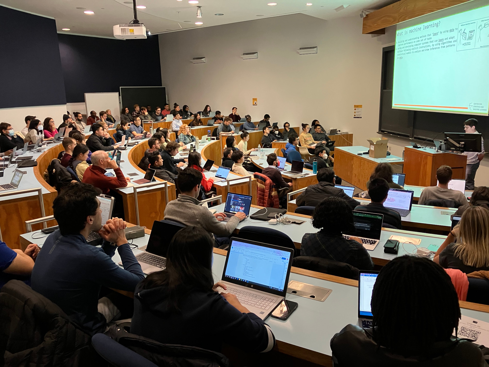

I primarily use this space to organize knowledge related to data science in the Resources tab (above),
but I also have details about my professional background.

Teaching an introductory machine learning workshop at Princeton's wintersession, 2023